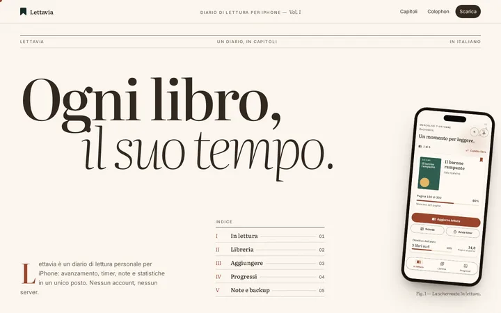
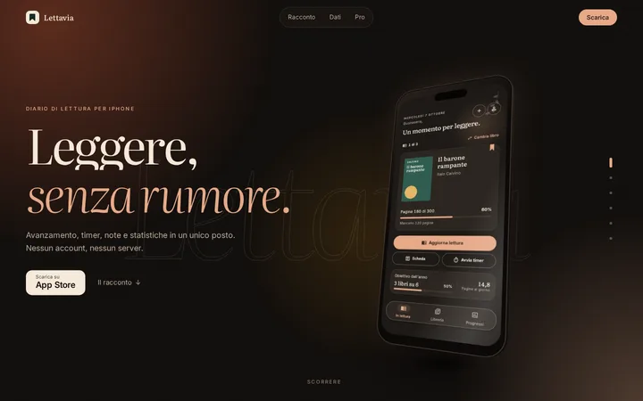
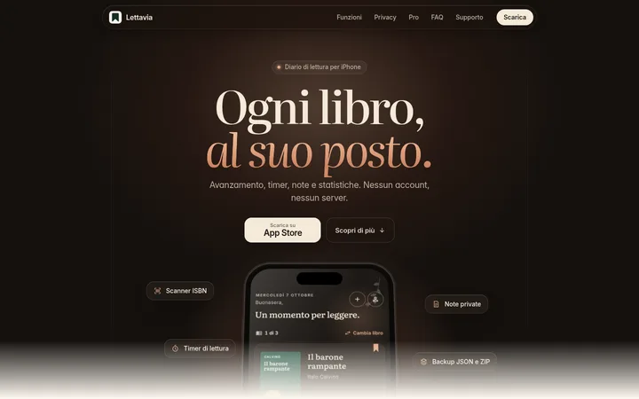
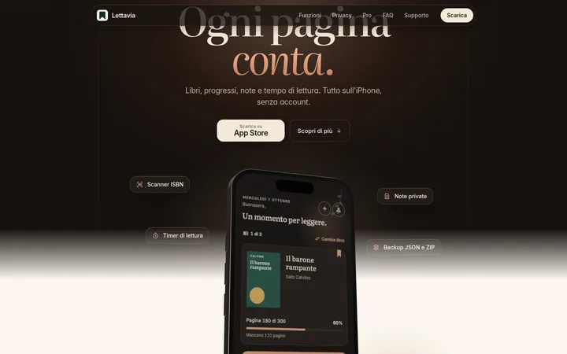

Lettavia · Concept di design
Cinque direzioni, carta bianca.
Anteprime non definitive: due ispirate a siti premiati agli Awwwards, una costruita su pattern di siti di app raccolti su Mobbin e le sue evoluzioni Premium e Premium Plus. Il sito attuale resta invariato.

EditorialeRivista e libro: tipografia enorme, capitoli in orizzontale, note a piè di pagina.
ImmersivoScuro e cinematografico: un iPhone in prospettiva che ruota mentre si scorre.- MobbinSito di prodotto pulito: hero centrata, funzioni a elenco con iPhone, Pro a due colonne.

PremiumEvoluzione della versione Mobbin: hero scura con iPhone in prospettiva, funzioni a bento, palette Pro dal vivo.
Premium PlusiPhone 3D in WebGL che ruota con lo scroll, scaffale animato, cursore e transizioni tra le pagine.